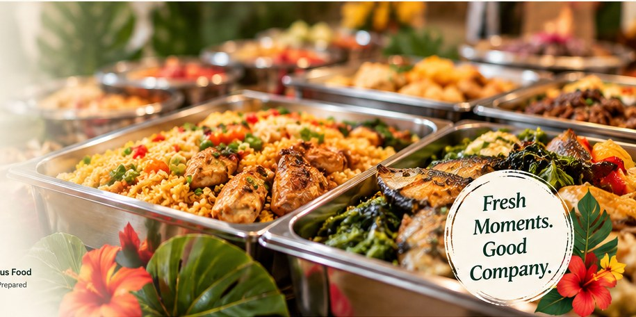

Traditional favourites
Fish, Polom & Sago
A taste of local food traditions prepared for sharing.
Catering · Meals · Baked Goods
Joo Lee's Catering Services prepares satisfying meals, traditional favourites, baked treats and food packs for gatherings, functions and everyday occasions in Papua New Guinea.
Thoughtfully prepared. Made to share.

Our food selection
Explore a selection of JLCS meals and baked goods. Confirm menu availability, quantities and pricing when enquiring about an order or event.
A taste of local food traditions prepared for sharing.

A hearty traditional combination for your meal selection.

A colourful meal option for lunches and catering orders.

A satisfying meal served with vegetables.

A convenient meal choice for individual orders and functions.

A baked favourite for morning tea, meetings and gatherings.

A sweet treat for family, guests or colleagues.

Chocolate-coated cake squares for celebrations and tea breaks.

Packaged cookies for a snack or treat.

Colourful cookies for a fun treat selection.
A little about us
Joo Lee's Catering Services (JLCS) offers food and catering options for customers, families, workplace gatherings and special events. We aim to make ordering straightforward and offer food choices suited to each occasion.
Planning an order or event?
Contact JLCS to discuss menu options, quantities, dates and catering requirements. Confirm availability and pricing when making your enquiry.